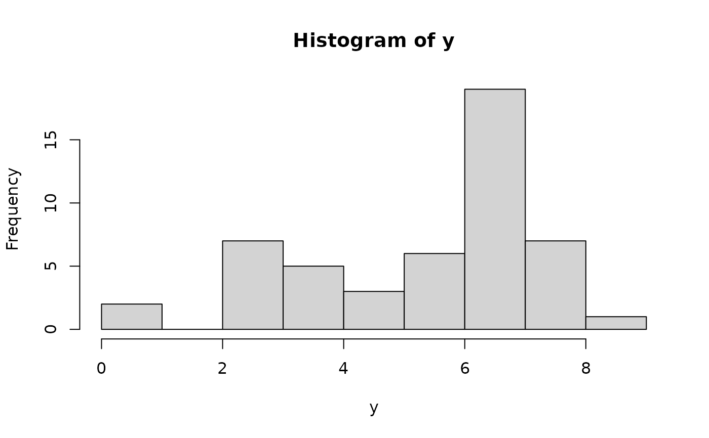
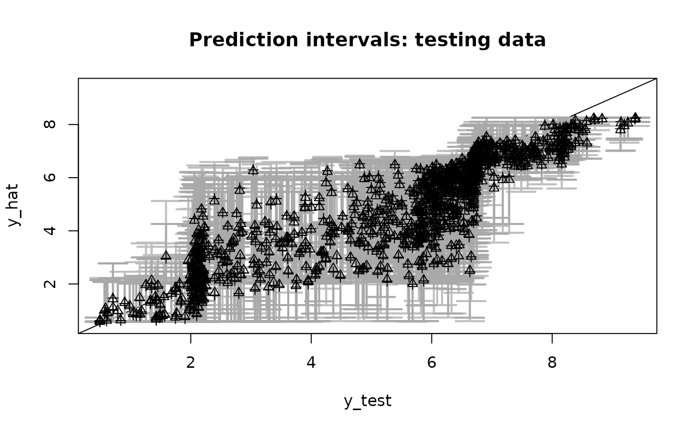

Given Monte Carlo draws from the surrogate posterior, apply sampling importance reweighting (SIR) to correct for the true model likelihood.
Arguments
- fit
a fitted model object that includes
coefficientsthe posterior mean of the regression coefficientspost_theta:nsave x psamples from the posterior distribution of the regression coefficientspost_ypred:nsave x n_testsamples from the posterior predictive distribution at test pointsX_testpost_g:nsaveposterior samples of the transformation evaluated at the uniqueyvaluesmodel: the model fit (sblmorsbsm)
- sir_frac
fraction of draws to sample for SIR
- nsims_prior
number of draws from the prior
- verbose
logical; if TRUE, print time remaining
Details
The Monte Carlo sampling for sblm and
sbsm uses a surrogate likelihood for posterior inference,
which enables much faster and easier computing. SIR provides a correction for
the actual (specified) likelihood. However, this correction
step is quite slow and typically does not produce any noticeable
discrepancies, even for small sample sizes.
Note
SIR sampling is done WITHOUT replacement, so sir_frac
is typically between 0.1 and 0.5. The nsims_priors draws
are used to approximate a prior expectation, but larger values
can significantly slow down this function.
Examples
# \donttest{
# Simulate some data:
dat = simulate_tlm(n = 50, p = 5, g_type = 'step')
y = dat$y; X = dat$X # training data
y_test = dat$y_test; X_test = dat$X_test # testing data
hist(y, breaks = 10) # marginal distribution

# Fit the semiparametric Bayesian linear model:
fit = sblm(y = y, X = X, X_test = X_test)
#> [1] "2 seconds remaining"
#> [1] "2 seconds remaining"
#> [1] "1 seconds remaining"
#> [1] "Total time: 3 seconds"
names(fit) # what is returned
#> [1] "coefficients" "fitted.values" "post_theta" "post_ypred"
#> [5] "post_g" "model" "y" "X"
#> [9] "X_test" "psi" "approx_g" "sigma_epsilon"
# Update with SIR:
fit_sir = sir_adjust(fit)
#> [1] "26 seconds remaining"
#> [1] "24 seconds remaining"
#> [1] "21 seconds remaining"
#> [1] "18 seconds remaining"
#> [1] "15 seconds remaining"
#> [1] "12 seconds remaining"
#> [1] "9 seconds remaining"
#> [1] "6 seconds remaining"
#> [1] "3 seconds remaining"
#> [1] "0 seconds remaining"
#> [1] "Total time: 29 seconds"
# Prediction: unadjusted vs. adjusted?
# Point estimates:
y_hat = fitted(fit)
y_hat_sir = fitted(fit_sir)
cor(y_hat, y_hat_sir) # similar
#> [1] 1
# Interval estimates:
pi_y = t(apply(fit$post_ypred, 2, quantile, c(0.05, .95))) # 90% PI
pi_y_sir = t(apply(fit_sir$post_ypred, 2, quantile, c(0.05, .95))) # 90% PI
# PI overlap (%):
overlaps = 100*sapply(1:length(y_test), function(i){
# innermost part
(min(pi_y[i,2], pi_y_sir[i,2]) - max(pi_y[i,1], pi_y_sir[i,1]))/
# outermost part
(max(pi_y[i,2], pi_y_sir[i,2]) - min(pi_y[i,1], pi_y_sir[i,1]))
})
summary(overlaps) # mostly close to 100%
#> Min. 1st Qu. Median Mean 3rd Qu. Max.
#> 60.48 92.48 96.82 94.82 99.24 100.00
# Coverage of PIs on testing data (should be ~ 90%)
mean((pi_y[,1] <= y_test)*(pi_y[,2] >= y_test)) # unadjusted
#> [1] 0.941
mean((pi_y_sir[,1] <= y_test)*(pi_y_sir[,2] >= y_test)) # adjusted
#> [1] 0.933
# Plot together with testing data:
plot(y_test, y_test, type='n', ylim = range(pi_y, pi_y_sir, y_test),
xlab = 'y_test', ylab = 'y_hat', main = paste('Prediction intervals: testing data'))
abline(0,1) # reference line
suppressWarnings(
arrows(y_test, pi_y[,1], y_test, pi_y[,2],
length=0.15, angle=90, code=3, col='gray', lwd=2)
) # plot the PIs (unadjusted)
suppressWarnings(
arrows(y_test, pi_y_sir[,1], y_test, pi_y_sir[,2],
length=0.15, angle=90, code=3, col='darkgray', lwd=2)
) # plot the PIs (adjusted)
lines(y_test, y_hat, type='p', pch=2) # plot the means (unadjusted)
lines(y_test, y_hat_sir, type='p', pch=3) # plot the means (adjusted)

# }